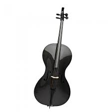

1. I love to play the cello on a regular basis so much that I am also a in Music performance. I am also involved in a chamber ensemble currently coached by Noreen Silver!
2. I also enjoying skiing. I started skiing every since I was about three years old. One of the reasons I decided to attend the Univeristy if Maine was because of skiing!
3. Sailing has always been a great expirence for me meeting knew people on the water while sailing with my father or my brother. I also have had the pleasure of attending a summer camp every year until high school in Freeport, Maine!
4. Camping is also something that I've loved every since I satrted in the Boy Scouts of America. Whether the camping is in the sweet spot of begining of Fall or if its in the terrible spots of the bleak mid Winter or if its the hot, humid, wet and gross type of camping!